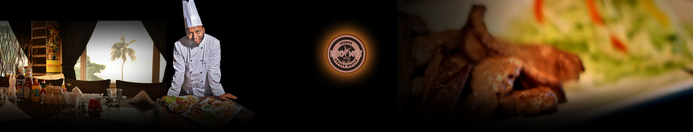
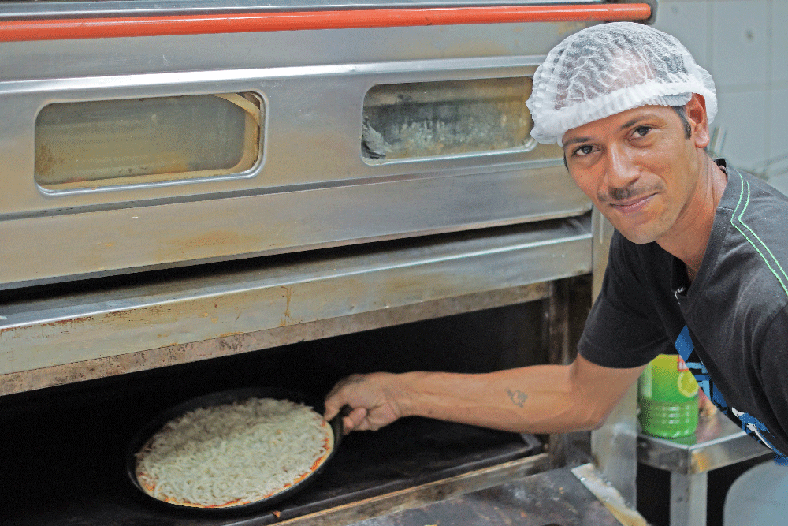

Our Valued guests — This menu offers you delicious food complemented with our homemade irresistible desserts and beverages. Just enjoy the taste.

Our Team
Firnandos
Firnandos our Best Chef of the year 2018 in Besteria & Basta in the region of Oman Wusta states. Also he is a prize winner of many competitions.

Esabela & Martin
Esabela & Martin — Best Chef assistant and Front Desk Customer comfort team of the House. With them you are absolutely in good hands.

Chef Muzamel
Chef Muzamel — Senior Chef in House, specialist in Sea Food Grill and Combos.

Tomas Hoyin
Tomas Hoyin — Creative campaign controller with absolutely stunning character full of energy.

Dr. Dressman
Our Head Chef in House — specialist in continental and African cuisine with strong practice in managing.